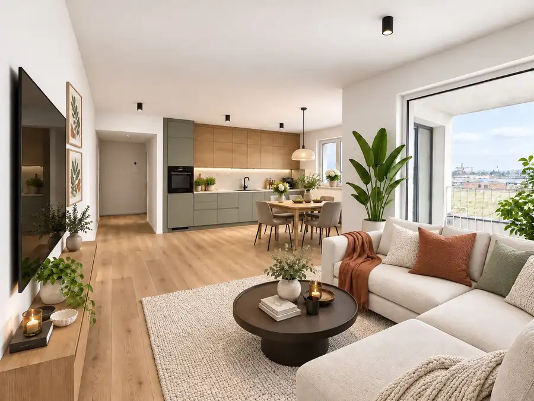

Levelreal | predpredaj za uvádzacie ceny! – istrica, Banská Bystrica – Sásová
Banská Bystrica
- Dispozícia2-izbový
- Plocha44 m²
- Poschodie3. z 6
- StavNovostavba
- VlastníctvoFiremné
- Energetická triedaA
O nehnuteľnosti
Ponúkame Vám exkluzívne na predaj moderné 1 až 4-izbové byty v novom rezidenčnom projekte ISTRICA v Banskej Bystrici.Projekt ISTRICA prináša nadčasové bývanie pre tých, ktorí túžia po spojení komfortu, prírody a mestského životného štýlu.Komplex sa nachádza v tichej časti Sásovej, priamo pri Borovicovom háji, ktorý poskytuje ideálne prostredie pre relax, šport aj rodinný život. Architektúra projektu je elegantná, funkčná a rešpektuje okolie – vytvára pocit súkromia a harmónie.Byty sú navrhnuté s dôrazom na svetlo, priestor a efektívne riešené dispozície. Každý detail projektu zohľadňuje pohodlie moderného bývania – od kvalitných stavebných materiálov až po bezbariérový prístup a dostatok parkovacích miest. ZÁKLADNÁ CHARAKTERISTIKA:•Lokalita: Banská Bystrica – Sásová•Dispozície: 1-izbové, 2-izbové, 3-izbové a 4-izbové byty•Výmera: od 35 m² do 115 m²•Balkóny, lodžie alebo priestranné terasy•Štandard: holobyt s možnosťou dokončenia na kľúč•Energetická trieda: A0 – nízkoenergetické bývanie•Parkovanie: podzemné garáže + vonkajšie státia•Pivničné kobky k dispozícii•Uvádzacie ceny už od 99 990 € LOKALITA A OKOLIE:Projekt ISTRICA je situovaný v pokojnej časti Sásovej, v bezprostrednej blízkosti Borovicového hája.V okolí nájdete všetko, čo potrebujete pre pohodlný život – školu, škôlku, potraviny, zdravotné stredisko, MHD aj možnosti pre šport a oddych v prírode.Lokalita ponúka rýchle napojenie do centra Banskej Bystrice a výbornú dostupnosť autom aj mestskou dopravou. TOP 5 VÝHOD PROJEKTU:1.Tichá lokalita blízko prírody, ideálna pre rodiny aj jednotlivcov2.Kompletná občianska vybavenosť v pešej dostupnosti3.Nízkoenergetické, moderné stavby s dôrazom na kvalitu4.Dostatok parkovacích miest – garáže aj vonkajšie státia5.Spojenie komfortu mesta s pokojom prírody VYBAVENIE v cene nehnuteľnosti:•Veľkoformátové okná s izolačným troj-sklom,•Podlahové kúrenie, predpríprava na klimatizáciu, predpríprava na vonkajšie žalúzie,•Bezbariérový prístup a moderné výťahy,•Kvalitné materiály a nadčasový dizajn, klientské zmeny,•Nízke prevádzkové náklady, UVÁDZACIE CENY:-1-izbové byty už od 116.990,- eur,-2-izbové byty už od 157.990,- eur,-3-izbové byty už od 224.990,- eur,-4-izbové veľko-metrážne byty už od 299.990,- eur. HARMONOGRAM VÝSTAVBY:•11/2025 – 04/2026: inžinierske siete a prípravné práce,•05/2026 – 09/2027: hrubá výstavba bytových domov,•12/2028: kolaudácia a odovzdanie bytov z I. etapy – BD 11, B12, B13, B14. Exkluzívny predajca:Váš nový domov na dosah – vyberte si byt v projekte ISTRICA ešte dnes. KONTAKT NA REALITNÉHO MAKLÉRA:-Ing. Milan Štrbo, PhD.-Telefón: +421 905 283 041-E-mail: strbo@levelreal.sk- www.istrica.skKONTAKT NA ZAZMLUVNENÉHO FINANČNÉHO PORADCU:-Mgr. Katarína Fraňová-Telefón: +421 903 930 593-E-mail: kfranova@bsg.sk
Parametre
| Cena vrátane energií | Nie |
|---|---|
| Druh | 2 izbový byt |
| Dátum zverejnenia | 14. 11. 2025 |
| Energetický certifikát budovy | A |
| Orientácia | Západná |
| Podlažie | 3 |
| Počet balkónov | 1 |
| Počet nadzemných podlaží | 6 |
| Rok výstavby | 2026 |
| Stav nehnuteľnosti | Novostavba |
| Telekomunikácie | Optická sieť |
| Typ | Predaj |
| Typ konštrukcie | Železobetónová |
| Vlastníctvo | Firemné |
| Vybavenie | Výťah, Balkón |
| Vykurovanie | Podlahové |
| Úžitková plocha | 44 m² |
Kde to je


Mohlo by Vás zaujímať
 BytNové8
224 990 €Levelreal | predpredaj za uvádzacie ceny! – istrica, Banská Bystrica – Sásová
Banská Bystrica
3-izbový75 m²1. podlažie
Ponúkame Vám exkluzívne na predaj moderné 1 až 4-izbové byty v novom rezidenčnom projekte ISTRICA v Banskej Bystrici.Projekt ISTRICA prináša…
BytNové8
224 990 €Levelreal | predpredaj za uvádzacie ceny! – istrica, Banská Bystrica – Sásová
Banská Bystrica
3-izbový75 m²1. podlažie
Ponúkame Vám exkluzívne na predaj moderné 1 až 4-izbové byty v novom rezidenčnom projekte ISTRICA v Banskej Bystrici.Projekt ISTRICA prináša…

BytNové10 169 990 €LEVEL REAL - Dopredaj posledných bytov v projekte Cisárky Sereď 3-izbový86.69 m²2. podlažie LEVEL REAL ako exkluzívny predajca projektu Cisárky ponúka na predaj 3-izbový byt na periférii mesta Sereď. Výmera obytnej časti bytu je veľkorysých… BytNové8
116 990 €Levelreal | predpredaj za uvádzacie ceny! – istrica, Banská Bystrica – Sásová
Banská Bystrica
1-izbový30 m²2. podlažie
Ponúkame Vám exkluzívne na predaj moderné 1 až 4-izbové byty v novom rezidenčnom projekte ISTRICA v Banskej Bystrici.Projekt ISTRICA prináša…
BytNové8
116 990 €Levelreal | predpredaj za uvádzacie ceny! – istrica, Banská Bystrica – Sásová
Banská Bystrica
1-izbový30 m²2. podlažie
Ponúkame Vám exkluzívne na predaj moderné 1 až 4-izbové byty v novom rezidenčnom projekte ISTRICA v Banskej Bystrici.Projekt ISTRICA prináša…